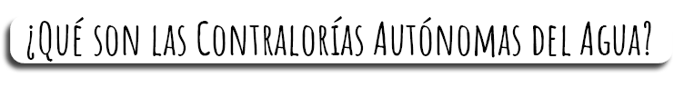
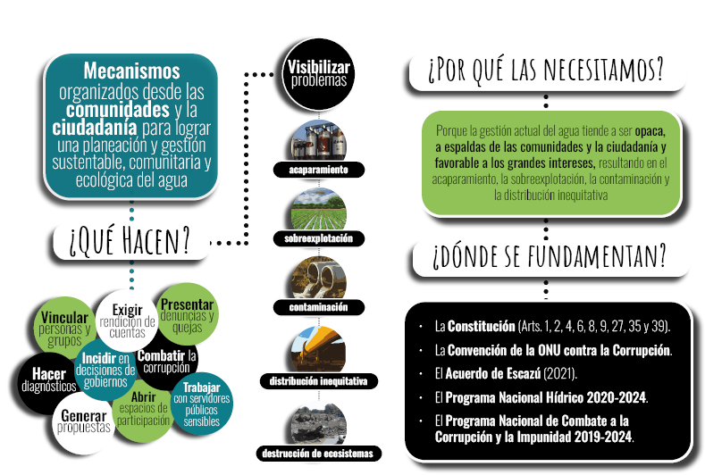
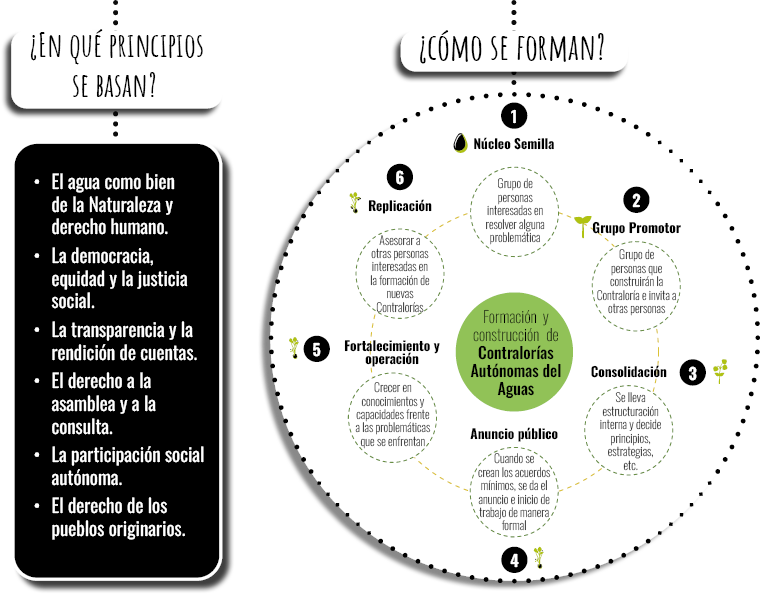

Contralorías de la Cuenca de México y su entorno
Inicio
Acerca de
Contralorías y Grupos Promotores
Nodo Tláhuac
Nodo Xochimilco
Nodo Tula
Nodo Texcoco
Nodo Lerma
Nodo
Biblioteca
Material de consulta
Memoria del proyecto
Manual de estrategias jurídicas
Diagnostico técnico
Videos
¡Participa!
¿Cómo participar?
Opciones de participación
Eventos
Contacto
Correo electrónico
Redes Sociales
Buzón de atención

 